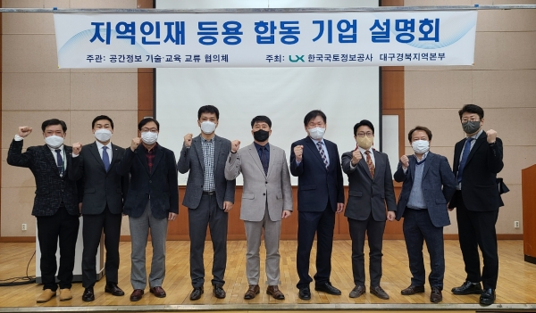

NEWS
LX대경 주최·공간정보 기술교육교류협의체 주관 기업 설명회 개최

[국토일보 김준현 기자] 대구경북 공간정보 기술·교육 교류 협의체는 22일 지역인재 등용을 위한 기업설명회를 합동으로 개최했다.
LX한국국토정보공사 대구경북지역본부가 주최한 이번 기업설명회는 지난달 14일 발대식을 시작으로 지역의 인재양성 및 공간정보 생태계 활성화를 위해
운영되고 있는 협의체의 첫 번째 결실로 대구대학교 공간정보 관련 학과 재학생 대상으로 진행됐다.
행사는 ㈜누리지오시스템, ㈜서광항업, ㈜스마트지오, ㈜이지스, ㈜지오스카이, ㈜티엘엔지니어링 6개 기업과 LX공사가 각 기업의 사업소개, 기업인재상,
질의응답 등으로 이뤄졌다.
설명회에 참석한 대구대학교 양성철 교수는 “학생들을 위해 설명회를 개최해준 협의체에 감사 인사를 전하고 앞으로 협의체와 함께 산학 공동 기술개발 및
인재양성에 더욱 힘쓰겠다”고 말했다.
재학생 대표는 “이번 설명회로 다양한 진로에 대해 알 수 있는 뜻깊은 시간이었다”고 소감을 전했다.
LX대구경북지역본부장 이주화는 “지역의 인재육성과 민간상생·동반성장을 위해 앞장서는 협의체의 앞으로 행보가 더욱 기대된다”고 전했다.